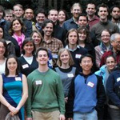
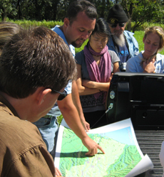

|  | NatCap Annual Meeting & TrainingNatCap will be holding our Annual Meeting & Training March 26-28, 2014 at Stanford. The meeting will be a great opportunity to hear from other scientists and practitioners using ecosystem service information to inform decisions, learn how to use our software (including InVEST and RIOS), and receive personalized help from our scientists and policy experts.Last chance to register! See below for agenda and logistics information. More information and registration |
|  | NatCap is Hiring!NatCap is growing, and we have a number of open positions currently available including several positions for software engineers, an economist, an administrative assistant, and a communications internship.View the position openings and apply |
A New Tool for Watershed ServicesNatCap's newest software, Resource Investment Optimization System (RIOS), is a free and open source software tool that supports the design of cost-effective investments in watershed services. RIOS provides a standardized, science-based approach to watershed management. It combines biophysical, social, and economic data to help users identify the best locations for protection and restoration activities in order to maximize the ecological return on investment, within the bounds of what is socially and politically feasible.Learn more about RIOS and download the tool |
Preserving nature isn't about aesthetics. It's about necessity.An excellent article by our very own Dr. Jonathan Foley, winner of the 2014 Heinz Award in the Environment, on the Anthropocene and need to preserve our natural systems.Read the article by Jonathan Foley in Ensia. |